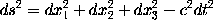
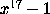
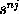
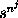
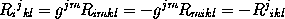

Subscripts and superscripts are obtained using the special
characters _ and ^ respectively. Thus the
identity
is obtained by typing
It can also be obtained by typing\[ ds^2 = dx_1^2 + dx_2^2 + dx_3^2 - c^2 dt^2 \]
since, when a superscript is to appear above a subscript, it is immaterial whether the superscript or subscript is the first to be specified.\[ ds^2 = dx^2_1 + dx^2_2 + dx^2_3 - c^2 dt^2 \]
Where more than one character occurs in a superscript or subscript,
the characters involved should be enclosed in braces.
For example, the polynomial

is obtained by typing $x^{17} - 1$.
One may not type expressions such as $s^n^j$ since this is
ambiguous and could be interpreted either as

or as
.
The first of these alternatives is
obtained by typing $s^{n j}$, the second by typing
$s^{n^j}$. A similar remark applies to subscripts.
Note that one can obtain in this way double superscripts (where a
superscript is placed on a superscript) and double subscripts.
It is sometimes necessary to obtain expressions in which the horizontal
ordering of the subscripts is significant. One can use an `empty group'
{} to separate superscripts and subscripts that must follow
one another. For example, the identity
can be obtained by typing
\[ R_i{}^j{}_{kl} = g^{jm} R_{imkl}
= - g^{jm} R_{mikl} = - R^j{}_{ikl} \]